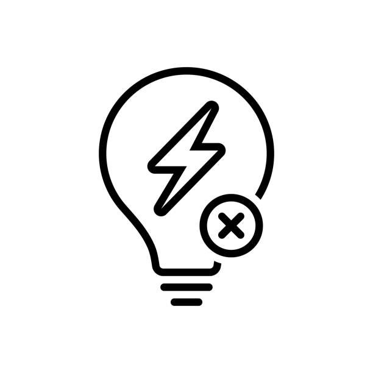

<!DOCTYPE html>
<html lang="en" style="height:100%;">
<head>
  <meta charset="UTF-8" />
  <meta name="viewport" content="width=device-width, initial-scale=1.0" />
  <title>Risks & Concerns — E-Overflow</title>
  <link rel="preconnect" href="https://fonts.googleapis.com" />
  <link rel="preconnect" href="https://fonts.gstatic.com" crossorigin="anonymous" />
  <link href="https://fonts.googleapis.com/css2?family=Readex+Pro:wght@300;400;500;600;700&family=JetBrains+Mono:wght@400;500&display=swap" rel="stylesheet" />
  <style>
    *, *::before, *::after { box-sizing: border-box; }
    html, body { height: 100%; margin: 0; padding: 0; }
    body { font-family: 'Readex Pro', system-ui, -apple-system, sans-serif; background: #000; color: #fff; -webkit-font-smoothing: antialiased; }
    .mono { font-family: 'JetBrains Mono', ui-monospace, SFMono-Regular, monospace; }
    em { font-style: normal; color: #fff; }
  </style>
  <script src="https://unpkg.com/react@18.3.1/umd/react.development.js" integrity="sha384-hD6/rw4ppMLGNu3tX5cjIb+uRZ7UkRJ6BPkLpg4hAu/6onKUg4lLsHAs9EBPT82L" crossorigin="anonymous"></script>
  <script src="https://unpkg.com/react-dom@18.3.1/umd/react-dom.development.js" integrity="sha384-u6aeetuaXnQ38mYT8rp6sbXaQe3NL9t+IBXmnYxwkUI2Hw4bsp2Wvmx4yRQF1uAm" crossorigin="anonymous"></script>
  <script src="https://unpkg.com/@babel/standalone@7.29.0/babel.min.js" integrity="sha384-m08KidiNqLdpJqLq95G/LEi8Qvjl/xUYll3QILypMoQ65QorJ9Lvtp2RXYGBFj1y" crossorigin="anonymous"></script>
  <script type="text/babel" src="report-shell.jsx"></script>
  <script type="text/babel" src="report-primitives.jsx"></script>
</head>
<body>
  <div id="root"></div>
  <script type="text/babel">
    const { useState } = React;

    // L = likelihood 1-5, C = consequence 1-5
    const register = [
      { id: "R-01", cat: "technical", risk: "SSR fails in conducting state, overheating hot-water cylinder", l: 2, c: 4, mitigation: "Independent thermal cutout in series with element; weekly auto-test routine; annual replacement schedule." },
      { id: "R-02", cat: "technical", risk: "CT clamp drifts or detaches, diverter loses surplus reference", l: 3, c: 3, mitigation: "Quarterly calibration via community technician; clamp secured with cable tie + heatshrink; UI flags loss of signal." },
      { id: "R-03", cat: "technical", risk: "Inrush current trips upstream protection on cloudy days", l: 3, c: 2, mitigation: "Soft-start algorithm with 2 s ramp; oversize C-curve breaker by one rating." },
      { id: "R-04", cat: "environmental", risk: "Cyclone damages exterior cabling or external enclosure", l: 3, c: 4, mitigation: "All cabling internal where possible; cyclone-rated UV-stable conduit; pre-season inspection embedded in M&E plan." },
      { id: "R-05", cat: "environmental", risk: "Saltwater corrosion of enclosure terminals", l: 3, c: 3, mitigation: "IP65 enclosure with gland fittings; stainless terminals; biannual visual inspection." },
      { id: "R-06", cat: "social", risk: "Community lacks confidence in unfamiliar device after install", l: 3, c: 3, mitigation: "Plain-language reference card per dwelling; named local technician contact; 30-day post-install check-in." },
      { id: "R-07", cat: "social", risk: "Loss of key community technician without successor", l: 2, c: 4, mitigation: "Train minimum two technicians; written runbook held by Yintjingga; remote support arrangement with installer." },
      { id: "R-08", cat: "cultural", risk: "Install schedule conflicts with cultural commitments / sorry business", l: 4, c: 3, mitigation: "Schedule via Yintjingga liaison only; build 30 % schedule slack; no fixed deadlines communicated to community." },
      { id: "R-09", cat: "financial", risk: "Component lead times slip past planned install window", l: 4, c: 2, mitigation: "Order critical-path items 8 weeks before install; pre-stage in regional depot." },
      { id: "R-10", cat: "financial", risk: "Funding source falls through after design accepted", l: 2, c: 5, mitigation: "Two parallel funding pathways: ARENA + Indigenous Business Australia. Phased deployment allows pause without sunk-cost loss." },
      { id: "R-11", cat: "regulatory", risk: "Installation not signed off by licensed electrician (compliance gap)", l: 1, c: 5, mitigation: "Engagement contract requires Cert IV electrician on every install. Compliance docs filed with Yintjingga before energisation." },
      { id: "R-12", cat: "technical", risk: "Battery firmware misinterprets diverter as fault load", l: 3, c: 3, mitigation: "Compatibility tested with installed Selectronic inverter at bench. Diverter installed downstream of battery measurement point." },
    ];

    const score = (l, c) => l * c;
    const tone = (s) => s >= 15 ? "high" : s >= 8 ? "med" : "low";
    const toneColor = (t) => t === "high" ? "rgba(232,123,110,1)" : t === "med" ? "rgba(232,192,98,1)" : "rgba(154,230,110,1)";
    const toneBg = (t) => t === "high" ? "rgba(232,123,110,0.13)" : t === "med" ? "rgba(232,192,98,0.13)" : "rgba(154,230,110,0.13)";

    const faq = [
      { q: "What happens if the diverter fails?", a: "The dwelling reverts to its previous baseline behaviour — solar generation continues, battery charges as before, and the hot water cylinder runs on its existing element circuit. The diverter is wired in parallel; a failure is degraded performance, not loss of service." },
      { q: "Is the device safe in tropical conditions?", a: "The recommended enclosure is rated IP65 with a 60 °C operating ceiling. All components are specified for continuous duty at 45 °C ambient. An independent thermal cutout in series with the element protects against runaway heating." },
      { q: "Does it require an internet connection?", a: "No. Both Solution One and Solution Two operate entirely standalone. There is no cloud, no app, no software update path. Local data logging is optional and stored to a removable SD card." },
      { q: "What ongoing maintenance is required?", a: "An annual visual inspection by a community technician (≈ 15 minutes per dwelling), quarterly CT clamp calibration (≈ 5 minutes), and a planned SSR replacement every 5 years." },
      { q: "Who owns the installed equipment?", a: "All hardware is the property of the Yintjingga Aboriginal Corporation upon commissioning. The Corporation can elect to repair, replace, modify, or remove it without further consultation with the design team." },
      { q: "Will residents notice anything different day-to-day?", a: "No — that is the design intent. Hot water remains hot, lights stay on, and no new screens, apps, or routines are introduced into the home." },
      { q: "What if the community grows or load profiles change?", a: "The diverter is sized for ≤ 4.4 kW resistive load. Up to two additional loads can be added downstream (e.g. pool pump, second tank). For larger expansions, a paralleled second unit is supported." },
      { q: "Can the design be replicated for other communities?", a: "Yes, with site-specific feasibility. The architecture is intentionally generic — only the load-shedding priority list and weather assumptions need re-tuning for a different community." },
      { q: "What if someone tries to bypass or remove it?", a: "Removal is straightforward and reversible — the dwelling returns to its original configuration. No lock-in. This is by design." },
    ];

    function Page() {
      return (
        <div>
          <ReportNav active="report" />
          <section style={{ padding: "120px 40px 80px", background: "#000", borderBottom: "1px solid rgba(255,255,255,0.06)" }}>
            <div style={{ maxWidth: "1280px", margin: "0 auto", display: "grid", gridTemplateColumns: "1fr 240px", gap: "64px", alignItems: "center" }}>
              <div>
                <p style={{ fontSize: "clamp(10px, 2.5vw, 12px)", letterSpacing: "0.18em", textTransform: "uppercase", color: "rgba(255,255,255,0.35)", margin: "0 0 clamp(12px, 2.5vw, 24px)" }}>08 — risks & concerns</p>
                <h1 style={{ fontSize: "clamp(48px, 7vw, 112px)", fontWeight: 500, letterSpacing: "-0.04em", lineHeight: 0.92, color: "#fff", margin: 0 }}>what could<br/>go wrong</h1>
                <p style={{ fontSize: "clamp(16px, 1.5vw, 20px)", color: "rgba(255,255,255,0.55)", lineHeight: 1.6, maxWidth: "640px", margin: "32px 0 0" }}>A risk register with explicit mitigations, and an FAQ that anticipates the questions Yintjingga, residents, funders, and auditors will ask.</p>
              </div>
              <div style={{ display: "flex", justifyContent: "center", alignItems: "center" }}>
                
              </div>
            </div>
          </section>

          <Section bg="#000" pad="100px 40px 60px">
            <SectionLabel>how to read this register</SectionLabel>
            <div style={{ display: "grid", gridTemplateColumns: "1fr 1fr", gap: "80px", alignItems: "start" }}>
              <H2>likelihood × consequence,<br/>then mitigation.</H2>
              <div>
                <Body>
                  Each risk is scored on a 1–5 Likelihood scale and a 1–5 Consequence scale. The product (L × C) is the inherent risk score, banded into low / medium / high. The mitigation column describes the controls already designed into the system or planned for deployment.
                </Body>
                <div style={{ display: "flex", gap: "12px", marginTop: "28px" }}>
                  {["low", "med", "high"].map(t => (
                    <span key={t} style={{ fontSize: "clamp(9px, 2vw, 11px)", letterSpacing: "0.1em", textTransform: "uppercase", padding: "6px 12px", borderRadius: "999px", color: toneColor(t), background: toneBg(t) }}>{t}</span>
                  ))}
                </div>
              </div>
            </div>
          </Section>

          <Section bg="#000" pad="0 40px 100px">
            <div style={{ borderTop: "1px solid rgba(255,255,255,0.12)" }}>
              <div style={{ display: "grid", gridTemplateColumns: "60px 110px 1fr 50px 50px 80px 1.6fr", gap: "16px", padding: "16px 0", borderBottom: "1px solid rgba(255,255,255,0.15)" }}>
                {["id", "category", "risk", "l", "c", "score", "mitigation"].map(h => (
                  <span key={h} className="mono" style={{ fontSize: "clamp(9px, 2vw, 11px)", color: "rgba(255,255,255,0.4)", letterSpacing: "0.1em", textTransform: "uppercase" }}>{h}</span>
                ))}
              </div>
              {register.map(r => {
                const s = score(r.l, r.c);
                const t = tone(s);
                return (
                  <div key={r.id} style={{ display: "grid", gridTemplateColumns: "60px 110px 1fr 50px 50px 80px 1.6fr", gap: "16px", padding: "20px 0", borderBottom: "1px solid rgba(255,255,255,0.08)", alignItems: "center" }}>
                    <span className="mono" style={{ fontSize: "clamp(10px, 2.5vw, 12px)", color: "rgba(255,255,255,0.5)" }}>{r.id}</span>
                    <span style={{ fontSize: "clamp(10px, 2.5vw, 12px)", color: "rgba(255,255,255,0.6)", textTransform: "uppercase", letterSpacing: "0.06em" }}>{r.cat}</span>
                    <p style={{ fontSize: "clamp(12px, 3vw, 14px)", color: "#fff", margin: 0, lineHeight: 1.5, letterSpacing: "-0.01em" }}>{r.risk}</p>
                    <span className="mono" style={{ fontSize: "clamp(11px, 2.5vw, 13px)", color: "rgba(255,255,255,0.7)" }}>{r.l}</span>
                    <span className="mono" style={{ fontSize: "clamp(11px, 2.5vw, 13px)", color: "rgba(255,255,255,0.7)" }}>{r.c}</span>
                    <span style={{ fontSize: "clamp(10px, 2.5vw, 12px)", padding: "4px 10px", borderRadius: "999px", color: toneColor(t), background: toneBg(t), fontWeight: 500, letterSpacing: "0.05em", textTransform: "uppercase", textAlign: "center", display: "inline-block" }}>{s} · {t}</span>
                    <p style={{ fontSize: "clamp(11px, 2.5vw, 13px)", color: "rgba(255,255,255,0.55)", margin: 0, lineHeight: 1.55 }}>{r.mitigation}</p>
                  </div>
                );
              })}
            </div>
          </Section>

          <Section bg="#0a0a0a" pad="100px 40px">
            <SectionLabel>frequently asked questions</SectionLabel>
            <H2>before you ask,<br/>we already did.</H2>
            <p style={{ fontSize: "16px", color: "rgba(255,255,255,0.55)", lineHeight: 1.7, maxWidth: "640px", margin: "24px 0 56px" }}>
              The most common questions raised by Yintjingga, prospective residents, funding bodies, and external reviewers during the design phase.
            </p>
            <div style={{ borderTop: "1px solid rgba(255,255,255,0.12)" }}>
              {faq.map((f, i) => {
                const [open, setOpen] = useState(i === 0);
                return (
                  <div key={f.q} style={{ borderBottom: "1px solid rgba(255,255,255,0.08)" }}>
                    <button onClick={() => setOpen(!open)} style={{ width: "100%", padding: "28px 0", display: "flex", justifyContent: "space-between", alignItems: "center", background: "transparent", border: "none", color: "#fff", cursor: "pointer", textAlign: "left", fontFamily: "inherit", gap: "32px" }}>
                      <p style={{ fontSize: "clamp(18px, 1.8vw, 22px)", fontWeight: 500, letterSpacing: "-0.02em", margin: 0 }}>{f.q}</p>
                      <span style={{ fontSize: "20px", color: "rgba(255,255,255,0.5)", flexShrink: 0, transform: open ? "rotate(45deg)" : "rotate(0deg)", transition: "transform 0.3s" }}>+</span>
                    </button>
                    <div style={{ maxHeight: open ? "320px" : "0", overflow: "hidden", transition: "max-height 0.4s ease" }}>
                      <p style={{ fontSize: "16px", color: "rgba(255,255,255,0.6)", lineHeight: 1.75, margin: 0, paddingBottom: "32px", maxWidth: "880px" }}>{f.a}</p>
                    </div>
                  </div>
                );
              })}
            </div>
          </Section>

          <ReportFooter prev={{ href: "considerations.html", label: "Considerations" }} next={{ href: "implementation.html", label: "Implementation Plan" }} />
        </div>
      );
    }
    ReactDOM.createRoot(document.getElementById("root")).render(<Page />);
  </script>
  <button id="back-to-top" type="button" aria-label="Back to top"
    style="position:fixed;right:24px;bottom:24px;z-index:200;width:44px;height:44px;border-radius:999px;border:1px solid rgba(255,255,255,0.18);background:rgba(23,23,23,0.85);backdrop-filter:blur(12px);color:#fff;cursor:pointer;display:flex;align-items:center;justify-content:center;opacity:0;pointer-events:none;transform:translateY(8px);transition:opacity 0.25s ease, transform 0.25s ease;font-family:inherit;">
    <svg width="16" height="16" viewBox="0 0 24 24" fill="none" stroke="currentColor" stroke-width="2" stroke-linecap="round" stroke-linejoin="round"><line x1="12" y1="19" x2="12" y2="5"></line><polyline points="5 12 12 5 19 12"></polyline></svg>
  </button>
  <script>
    (function () { var btn = document.getElementById('back-to-top'); if (!btn) return;
      function update() { var y = window.scrollY || 0; if (y > 400) { btn.style.opacity='1'; btn.style.pointerEvents='auto'; btn.style.transform='translateY(0)'; } else { btn.style.opacity='0'; btn.style.pointerEvents='none'; btn.style.transform='translateY(8px)'; } }
      btn.addEventListener('click', function () { window.scrollTo({ top: 0, behavior: 'smooth' }); });
      window.addEventListener('scroll', update, { passive: true }); update();
    })();
  </script>
</body>
</html>